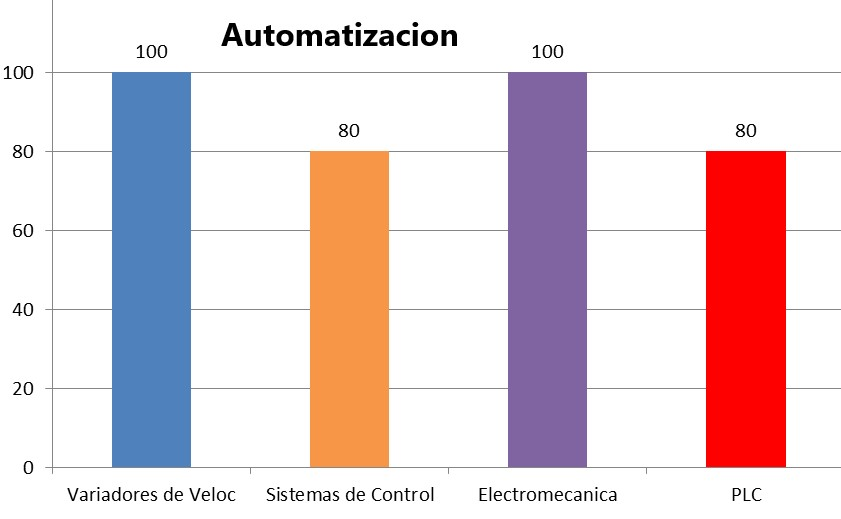
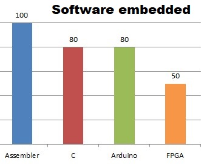
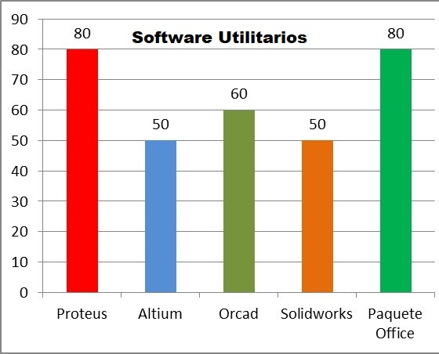
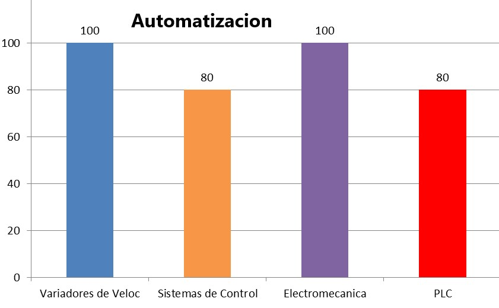
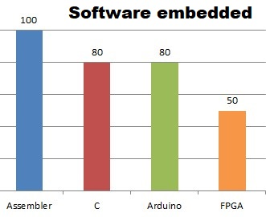
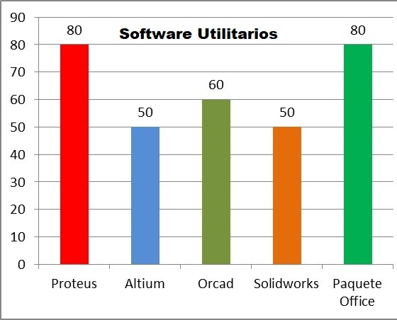
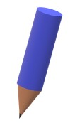
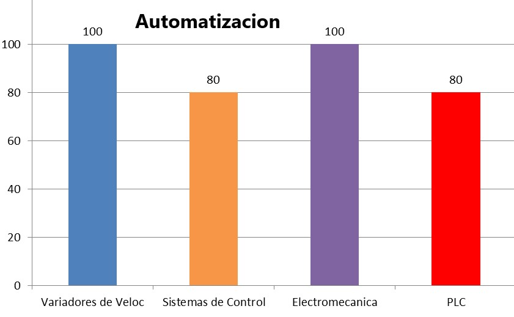
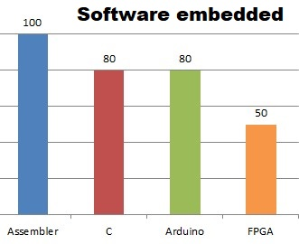
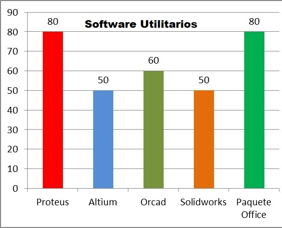

Habilidades
 





Soy Ingeniero Electronico con experiencia desde 1999 en Electronica Industrial, en Desarrollo Embebidos con MCU utiizando Lenguaje Assembleer y C, Full Stack Developer Jr. desde 2022 
06/2014 – Actualidad INTEMA – CONICET Mar del Plata, ARG.
Puesto: Profesional principal-Laboratorio de Electrónica
1999–06/2014 - VOLTA BUENOS AIRES SRL Mar del Plata, ARG.
Puesto: Jefe de Depto. Electricidad y Electrónica – Representante Tec
2012-Actualidad - EEST Nro 3. Domingo Faustino Sarmiento
Puesto: Profesor de Secundario de Escuela Técnica
1998–1999 ESKABE S.A. Mar del Plata, ARG.
Puesto: Puesta en marcha y optimización de Túnel de Pintura
1993–1997 EMZO S. A. I. C. Mar del Plata, ARG.
Puesto: Operador y Programador EIA-ISO de Centro de Mecanizado a control numérico MAZAK V-5 y MAZAK V-12.
1992–1993 G.U.G. A. Refrigeración Mar del Plata, ARG.
Puesto: Armado y Service de Equipos de refrigeración familiar y Comercial
1989–1992 Jugos Rico S.A. Mar del Plata, ARG.
Puesto: Operario de Producción
1988–1989 ASCENSORES VOLTA SAICIYF Mar del Plata, ARG.
Puesto: Operario Calificado (En Sección Tornería)
1986–1987 FLORENCIA S.A. (juegos SACOA) Mar del Plata, ARG.
Puesto: Técnico Auxiliar



Equipo de laboratorio que lo que hace es arrastrar una nuestra para analizar su viscosidad o adherencia o alguna otra propiedad del material, tiene un movimiento lineal con limites en los extremos que detienen el movimiento. Filmcasting es una técnica que se usa mucho en investigación de materiales Se opera por bluetooth con una aplicación realizada con MIT inventor y una placa arduino.
Vídeo que muestra la diferencia del motor sincrónico a imanes permanentes en comparación a otro tipo de accionamiento de maquinas de tracción, en este caso con un motor de continua. La maquina a destacar es la que se encuentra a la derecha en la imagen de color verde, donde ya de observa la diferencia de tamaño, fue diseñada y calculada para un ascensor que puede traccionar 1400 Kg a 90 m/min con suspensión 2 a 1. Fue fabricada por VOLTA BUENOS AIRES SRL, diseñada por Lino de la Torre y calculada por el Ing. Antonio Rivero, existen mas de 50 maquinas instaladas en el pais por nosotros Este video intenta explicar las bondades de la actualización tecnológica como forma de optimizar sistemas, aprovechando los últimos avances de la ingeniería.